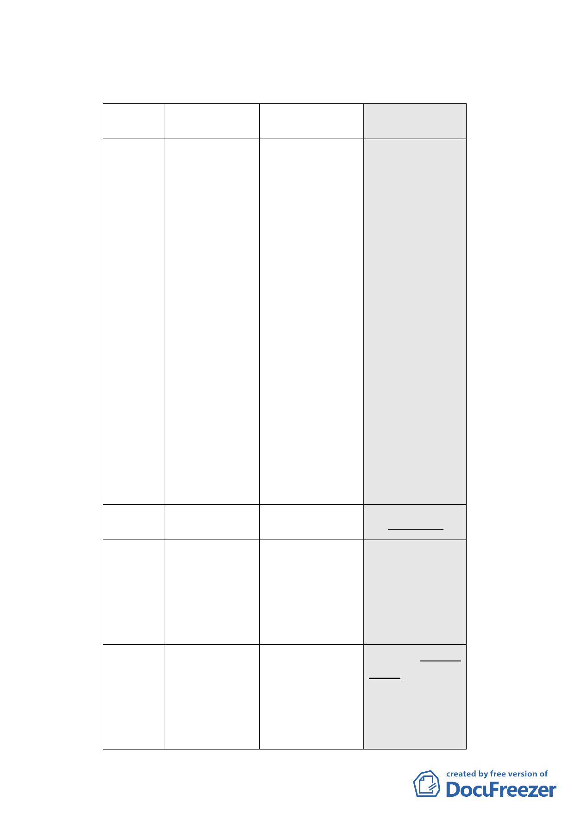

料到會。
四、 計畫內容重點概述：
項目
現行計畫
（92.1.7）
公展計畫
（98.12.22）
本次修正內容
（99.6.17）
土地及建物 作 指 定 之 使 用 項 目 ●建築物低層部(地面 ●依 92 年計畫規定。
使用項目 應 達 容 積 樓 地 板 面 層第 1 至第 3 層)應 ●申請臺北好好看容
積 1/2 以上，其餘除 作 指 定 之 使 用 項 積獎勵部分比照商
不 准 作 住 宅 外 比 照 目，其餘比照商三規 三，亦不得作住宅，
商三使用。
定，住宅使用之容積 且不得計入前項使
樓地板面積不得超 用容積樓地板面積
過申請基地容積樓 之計算。
地板面積（不含臺北
好好看獎勵容積）之
1/2 以上。建築物非
供住宅使用之樓
層，其同層及以下各
樓層應均非供住宅
使用。
●申請臺北好好看之
獎勵容積樓地板面
積應作商三使用項
目（不准許作住宅使
用），且不得計入前
項使用容積樓地板
面積之計算。
建蔽率
60％
增訂不得低於 40%
增訂不得低於 40%
容積放寬
建築物高度
依本計畫及其他規 依本計畫及其他規定 依本計畫及其他規定
定得增加容積者，其 得增加容積者，其增加 得增加容積者，其增加
增加容積之總和不 容積之總和不得超過 容積之總和不得超過
得 超 過 基 準 容 積 之 基準容積之 50%，其中 基準容積之 50%，其中
50%。
適用容積移轉者不得 適用容積移轉者不得
超過基準容積之 20%。 超過基準容積之 20%。
不超過 36 公尺為原 以不超過 90 公尺為原 建築物高度不得超過
則，有條件放寬至 40 則，有條件放寬高度， 70 公尺。
公尺。
惟不得超過 100 公尺，
經審議未符合規定
者，建築物高度不得超
過 80 公尺。
- 48 -